Site, painel administrativo, financeiro e acompanhamento da rede: tudo o que o sistema da Zaraki Sushi faz até agora, explicado para quem usa no dia a dia.
Matriz · Franquias · Equipe
Zaraki Sushi — GoiâniaVersão de 15 de outubro de 2026
Conteúdo
Sumário
1Visão geral do sistemaO que é, como está organizado, garantias de segurança
2Acesso, perfis e navegaçãoLogin, senhas, papéis, seletor de unidade, menu
3O site e os pedidos onlineCardápio, formulário, WhatsApp, cupom, contingência
4Página inicial do painelResumo do dia, indicadores e atalhos
6Encomendas, festas e Google AgendaLista, calendário e sincronização
7ClientesCadastro automático e histórico
8CardápioSabores, preço, custo e fotos
9Cupons de descontoPorcentagem, valor, limites, exclusivos
10FinanceiroFluxo de caixa, contas, DRE, saúde financeira, extratos
11Relatórios32 relatórios com exportação CSV
12Usuários e unidadesEquipe e cadastro de franquias
13AuditoriaHistórico à prova de adulteração
14Como a Matriz acompanha as unidadesFerramentas da rede e rotina sugerida
15Rotinas automáticasO que o sistema faz sozinho
16Situação atual e próximos passosO que falta para publicar
17GlossárioTermos usados no sistema
Capítulo 1
Visão geral do sistema
O sistema da Zaraki reúne em um só lugar o site onde o cliente faz o pedido e o painel administrativo onde a equipe acompanha pedidos, encomendas, clientes, cardápio, cupons, dinheiro e relatórios. Foi desenhado desde o início para uma rede de franquias: a Matriz e cada franqueado operam no mesmo sistema, cada um com seus próprios dados.
Como está organizado
Site (público)
Página da marca, cardápio e formulário de pedido (delivery, encomenda ou festa). O pedido é gravado no sistema e enviado ao WhatsApp da unidade.
Painel (/admin)
Área restrita, com login. O menu lateral tem três grupos: Operação, Financeiro e Gestão. Cada pessoa vê só o que o seu papel permite.
Unidades: Matriz e franquias
Cada unidade (a Matriz e cada franquia) tem dados próprios e separados: pedidos, clientes, cardápio, cupons, financeiro e equipe. A pessoa que trabalha numa franquia só enxerga aquela franquia. A administração da Matriz pode alternar entre as unidades e ver a rede inteira (capítulo 14).
Garantias de segurança e histórico
Como a Zaraki pretende crescer como franquia, preservar a história e ter controle sobre cada mudança é fundamental. Por isso três regras são garantidas pelo próprio banco de dados, e não só pelas telas:
Regra
O que significa na prática
Nada é apagado de verdade
"Excluir" sempre deixa o registro inativo (exclusão lógica). Pedidos, clientes, sabores, cupons, lançamentos, usuários e unidades podem ser restaurados. O banco recusa qualquer tentativa de apagar dados definitivamente.
Toda mudança fica registrada
Cada criação, alteração, exclusão e restauração vai para a Auditoria com quem fez, quando, de onde e o que mudou, campo a campo. Os registros formam uma corrente verificável: qualquer adulteração é detectada.
Isolamento entre unidades
O banco só entrega a cada pessoa os dados da unidade em que ela está trabalhando. Mesmo um erro de programação não faria uma franquia ver os dados de outra.
Em resumo
Você pode usar "Excluir" sem medo: tudo pode ser restaurado e tudo fica registrado.
Capítulo 2
Acesso, perfis e navegação
Entrar no painel
O acesso é por e-mail e senha, em /admin. O rodapé do site tem o link "Área administrativa".
Novos usuários recebem uma senha provisória e são obrigados a criar a própria senha no primeiro acesso.
Depois de 5 tentativas erradas em 15 minutos, o login daquele e-mail fica bloqueado por um tempo. O mesmo vale para muitas tentativas vindas do mesmo aparelho. Isso protege contra quem tenta adivinhar senhas.
Todo login, saída, senha errada e bloqueio fica registrado na Auditoria.
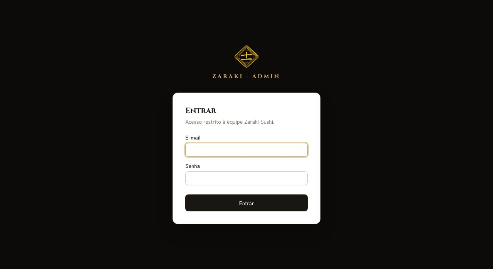
Tela de login do painel.
Papéis e permissões
Cada pessoa tem um papel em cada unidade em que trabalha. A administração da rede é um acesso especial da Matriz, com visão de todas as unidades.
O que a pessoa pode fazer
Atendente
Gerente
Administrador
Adm. da rede
Ver e lançar pedidos e encomendas; cadastrar clientes
Quem tenta abrir uma tela sem permissão vê um aviso, e a tentativa fica registrada na Auditoria.
Seletor de unidade e menu
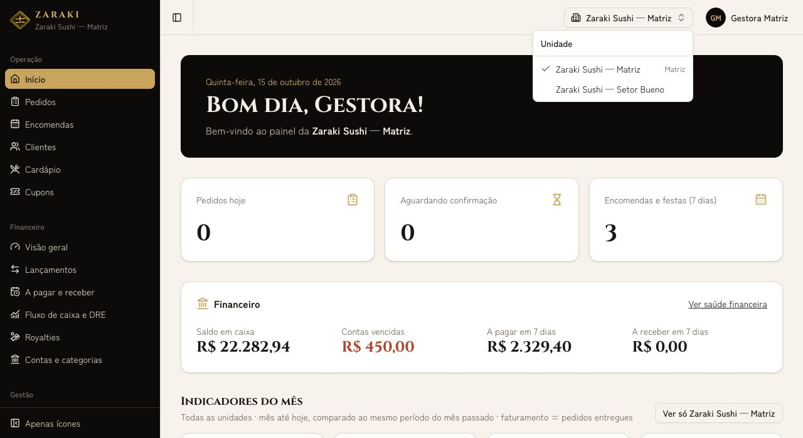
Seletor de unidade, no topo do painel.
Quem trabalha em mais de uma unidade troca de unidade no seletor no topo da tela. Ao trocar, todo o painel passa a mostrar os dados da unidade escolhida: pedidos, financeiro, relatórios etc.
O menu lateral pode ser recolhido para mostrar apenas ícones, com o botão no rodapé do menu. A preferência fica salva no aparelho.
No celular, o menu abre pelo botão no canto superior esquerdo.
Capítulo 3
O site e os pedidos online
Página inicial do site da Zaraki.
O site apresenta a marca e o cardápio, que vem do próprio painel: preços e fotos alterados em Cardápio aparecem no site. O formulário de pedido fica na seção Encomendas.
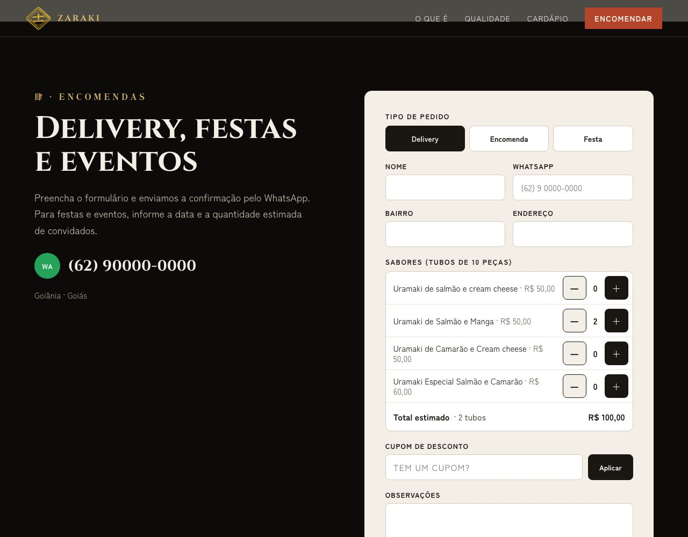
Formulário de pedido com cupom de desconto.
Como o pedido funciona
O cliente escolhe Delivery, Encomenda ou Festa. Encomenda e festa pedem data e horário; festa pede também o número de convidados.
Escolhe os sabores (tubos de 10 peças) e, se tiver, aplica um cupom.
Ao enviar, o pedido é gravado no sistema com um código (ex.: ZK-000123) e o WhatsApp da unidade abre com a mensagem pronta.
O pedido aparece no painel como Novo, esperando confirmação.
Proteções do site
Preço sempre do sistema: o total é recalculado no servidor com o preço do cardápio, então ninguém consegue mudar o preço pelo navegador.
Modo de contingência: se o banco de dados estiver fora do ar, o site continua aceitando pedidos. Eles vão direto pelo WhatsApp e nenhuma venda se perde.
Anti-abuso: o site aceita no máximo 5 pedidos a cada 10 minutos do mesmo aparelho. Também bloqueia temporariamente quem erra 10 códigos de cupom em 10 minutos.
Cliente identificado pelo WhatsApp: quem já comprou é reconhecido pelo telefone e o cadastro é atualizado sozinho.
Capítulo 4
Página inicial do painel
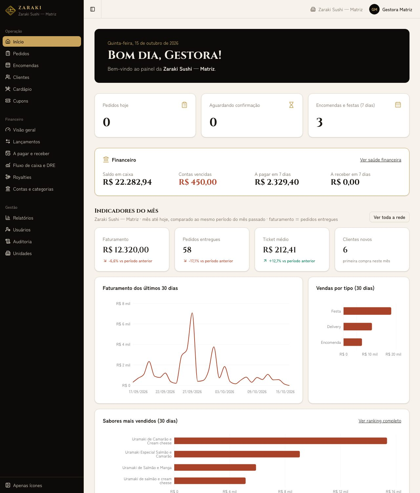
Página inicial: resumo do dia, financeiro e indicadores do mês.
Resumo do dia: pedidos de hoje, pedidos aguardando confirmação e encomendas/festas dos próximos 7 dias. Cada número leva à lista correspondente.
Financeiro (para quem tem acesso): saldo em caixa, contas vencidas e o que vence em 7 dias.
Indicadores do mês: faturamento, pedidos entregues, ticket médio e clientes novos, comparados ao mesmo período do mês passado.
Gráficos: faturamento dos últimos 30 dias, vendas por tipo e sabores mais vendidos.
Próximas encomendas e festas e atalhos para todas as telas.
Na Matriz, o botão "Ver toda a rede" soma os indicadores de todas as unidades.
Capítulo 5
Pedidos (delivery)
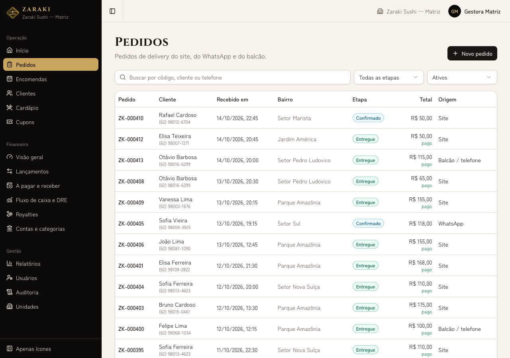
Lista de pedidos com busca e filtros.
Lista com busca por código, nome ou telefone e filtros por etapa e situação. Os pedidos do site chegam sozinhos.
Lançar pedido recebido por WhatsApp, telefone ou balcão, com taxa de entrega, desconto ou cupom, e forma de pagamento.
Etapas: Novo → Confirmado → Em preparo → Pronto → Saiu para entrega → Entregue. Cancelar exige o motivo. Cada mudança fica no histórico do pedido, com quem fez e quando.
Editar itens, endereço e valores. Os itens que já estavam no pedido mantêm o preço da época, então mudar o cardápio não altera pedidos antigos.
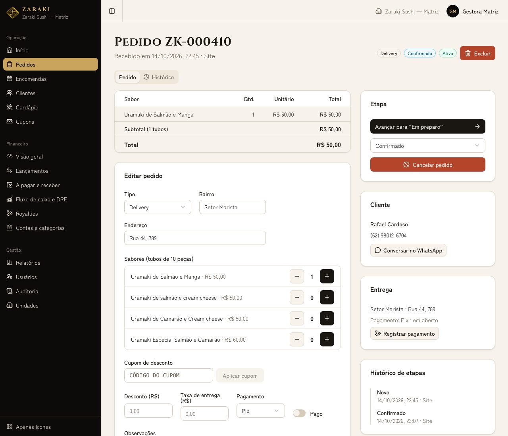
Ficha do pedido: itens, valores, etapas, cliente, pagamento e histórico.
Pagamento e caixa
Quando o pedido é marcado como pago (botão "Registrar pagamento" ou ao lançar), a venda entra sozinha no caixa, na conta da forma de pagamento: dinheiro vai para o Caixa da loja; Pix e cartão, para a Conta bancária.
Ao passar um pedido não pago para Entregue, o sistema pergunta "Pagamento recebido?". Se a resposta for "ainda não", o pedido aparece em A receber no Financeiro. Cancelar um pedido pago estorna a entrada no caixa.
Capítulo 6
Encomendas, festas e Google Agenda
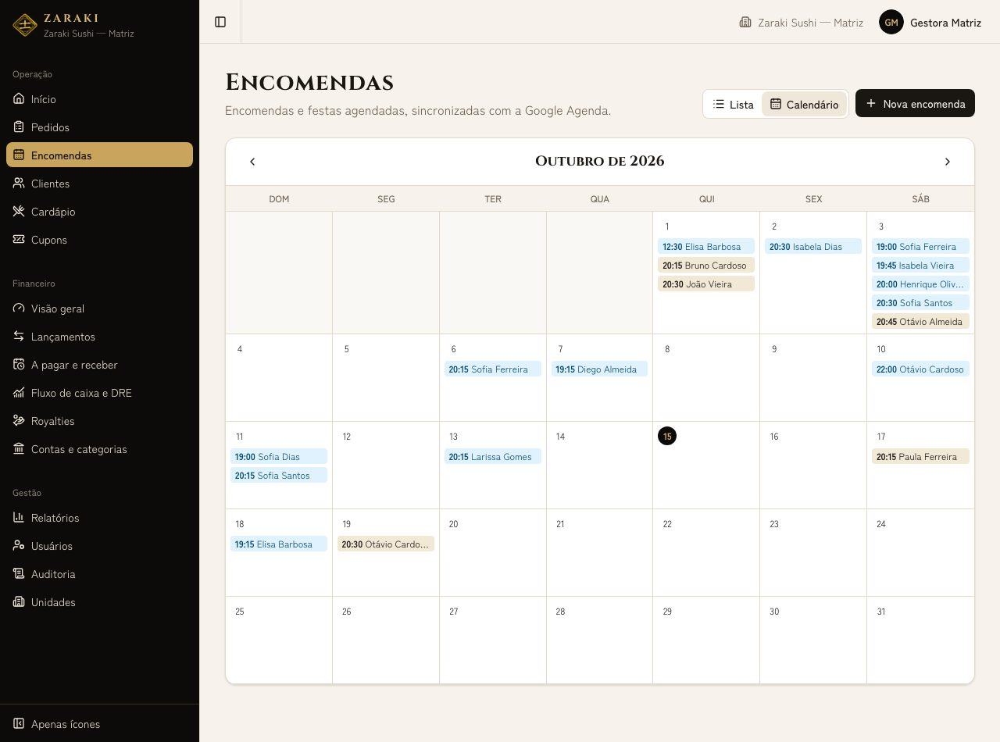
Encomendas e festas na visão de calendário.
Encomendas reúne as encomendas e as festas, que têm data marcada. A visão em lista separa as próximas das passadas; a visão de calendário mostra o mês.
Toda encomenda ou festa é enviada à Google Agenda da Zaraki (zarakisushigo@gmail.com) e atualizada quando muda. Se for cancelada, sai da agenda.
Cada pedido mostra a situação da agenda: Na agenda, Agenda: pendente ou Agenda: falhou. Há o botão "Sincronizar agora" para tentar de novo.
Cada franquia pode ter a própria agenda, informada no cadastro da unidade.
Depende de configuração
Para a sincronização funcionar no site publicado, é preciso criar a conta de serviço do Google e compartilhar a agenda com ela (passo a passo em docs/google-agenda.md). Enquanto isso não for feito, as encomendas ficam como "Agenda: pendente", sem perder nada.
Capítulos 7 e 8
Clientes e Cardápio
Clientes
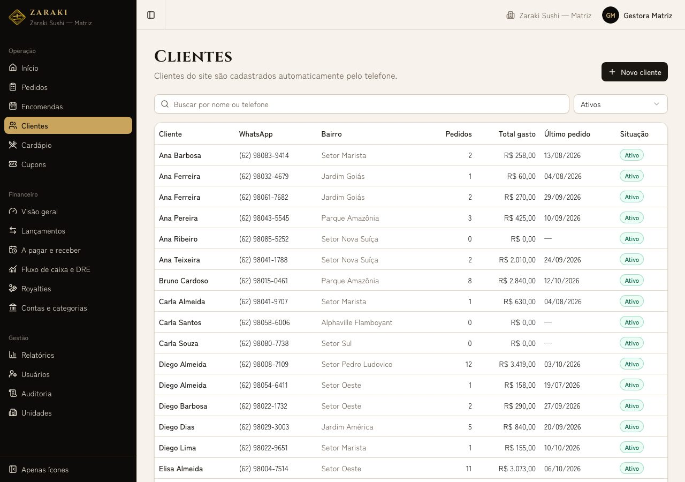
Lista de clientes.
Clientes do site são cadastrados automaticamente pelo WhatsApp; os demais podem ser cadastrados à mão.
A ficha guarda nome, telefone, bairro, endereço, aniversário, observações, os pedidos do cliente e o histórico de alterações.
Os relatórios de clientes usam esses dados: recompra, melhores clientes, aniversariantes, bairros e segmentação para campanhas.
Cardápio
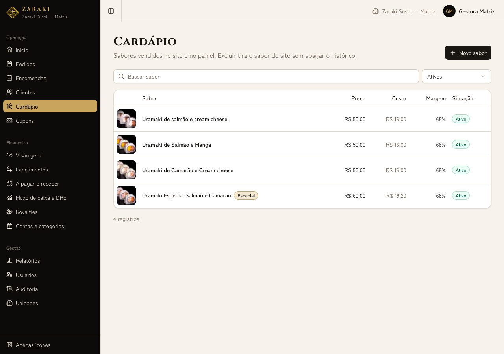
Sabores do cardápio, com preço e custo.
Cada sabor tem preço de venda, custo (base do CMV e da margem), foto, descrição, marcação de "especial" e ordem de exibição.
A foto é enviada pelo próprio painel. Fotos grandes de celular são reduzidas automaticamente antes do envio.
Excluir um sabor tira-o do site, sem afetar pedidos antigos, e ele pode ser restaurado. Mudanças de preço e custo ficam no relatório "Histórico de preços e custos".
Capítulo 9
Cupons de desconto
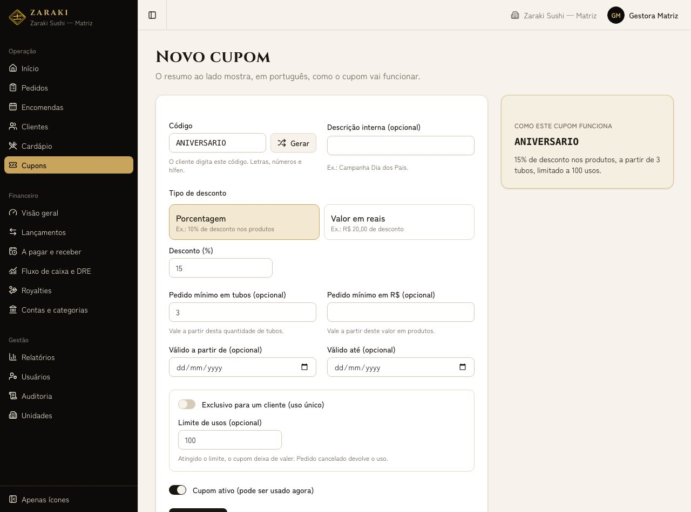
Cadastro de cupom com o resumo em português.
Dois tipos: porcentagem sobre os produtos (ex.: 10%) ou valor em reais (ex.: R$ 20). A taxa de entrega nunca tem desconto e o total nunca fica negativo.
Mínimo opcional: a partir de X tubos e/ou de R$ X em produtos.
Validade opcional (de/até) e limite de usos. Pedido cancelado devolve o uso.
Cupom exclusivo: preso ao WhatsApp de um cliente, de uso único.
A chave Ativo liga e desliga o cupom na hora, direto da lista.
Funciona no site e nos pedidos lançados no painel. O resumo ao lado do cadastro explica, em português, como o cupom vai funcionar.
A lista mostra a situação de cada cupom agora (Válido, Desativado, Esgotado, Expirado, Agendado) e quantas vezes foi usado. A ficha mostra os pedidos que usaram o cupom, o desconto concedido e quanto ele trouxe em vendas.
Capítulo 10
Financeiro
O Financeiro registra tudo o que entra e sai de cada unidade e mostra a saúde financeira do negócio. Cada unidade tem o seu: ao trocar de unidade no seletor, todo o financeiro muda junto.
Visão geral e semáforo de saúde
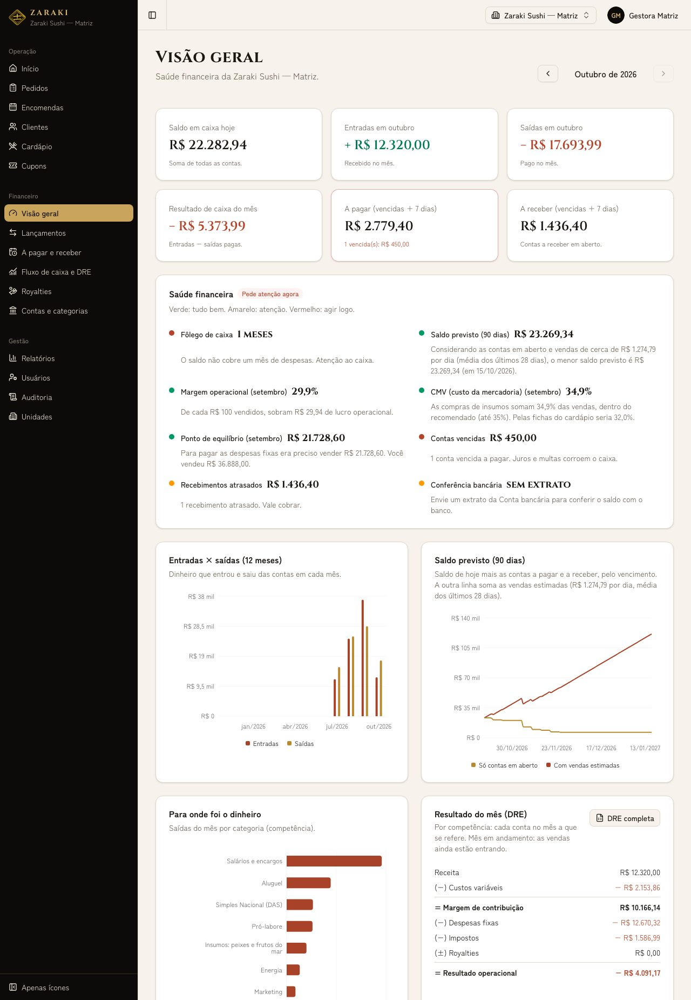
Visão geral: números do mês, semáforo de saúde financeira e gráficos.
Cada indicador aparece em verde (tudo bem), amarelo (atenção) ou vermelho (agir logo), com uma frase explicando o número.
Indicador
O que mede
Referência
Fôlego de caixa
Quantos meses de despesas o saldo atual cobre
verde a partir de 3 meses; vermelho abaixo de 1
Saldo previsto (90 dias)
Saldo de hoje + contas a receber − contas a pagar + vendas estimadas pela média dos últimos 28 dias
vermelho se ficar negativo em algum dia
Margem operacional
Quanto sobra de lucro da operação a cada R$ 100 vendidos
verde a partir de 10%; vermelho se negativa
CMV
Compras de insumos ÷ vendas, comparado ao custo pelas fichas do cardápio (diferença grande indica desperdício)
verde até 35%; vermelho acima de 40%
Ponto de equilíbrio
Quanto é preciso vender para pagar as despesas fixas
verde se as vendas cobriram
Contas vencidas
Contas a pagar em atraso
verde se nenhuma
Conferência bancária
Se há extrato recente da conta bancária e se ele bate com o sistema
amarelo sem extrato há mais de 31 dias ou com diferença
Mês em andamento
No meio do mês, o aluguel e a folha já venceram, mas as vendas ainda estão entrando. Por isso margem, CMV e ponto de equilíbrio usam o último mês fechado, e o indicador diz qual mês é.
Lançamentos
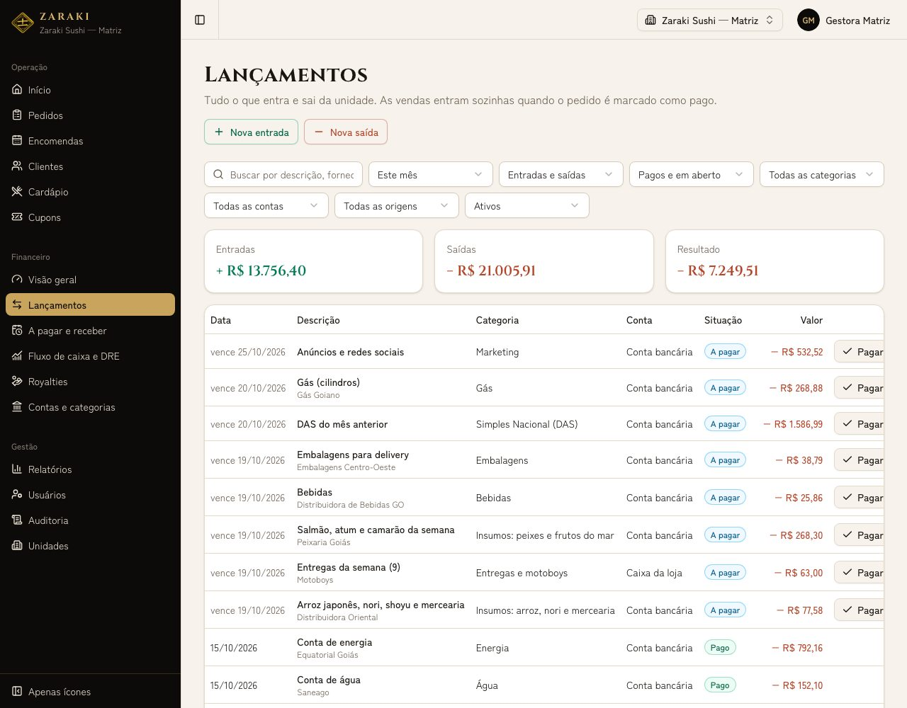
Lançamentos com filtros e totais do período.
Lista de todas as entradas e saídas, filtrável por período, tipo, situação (pago, em aberto, vencido), categoria, conta e origem, com os totais de entradas, saídas e resultado do filtro.
Origens automáticas: vendas de pedidos pagos, royalties, ajustes de conferência e transferências entre contas. Esses lançamentos são protegidos: a correção é feita na origem (no pedido, por exemplo).
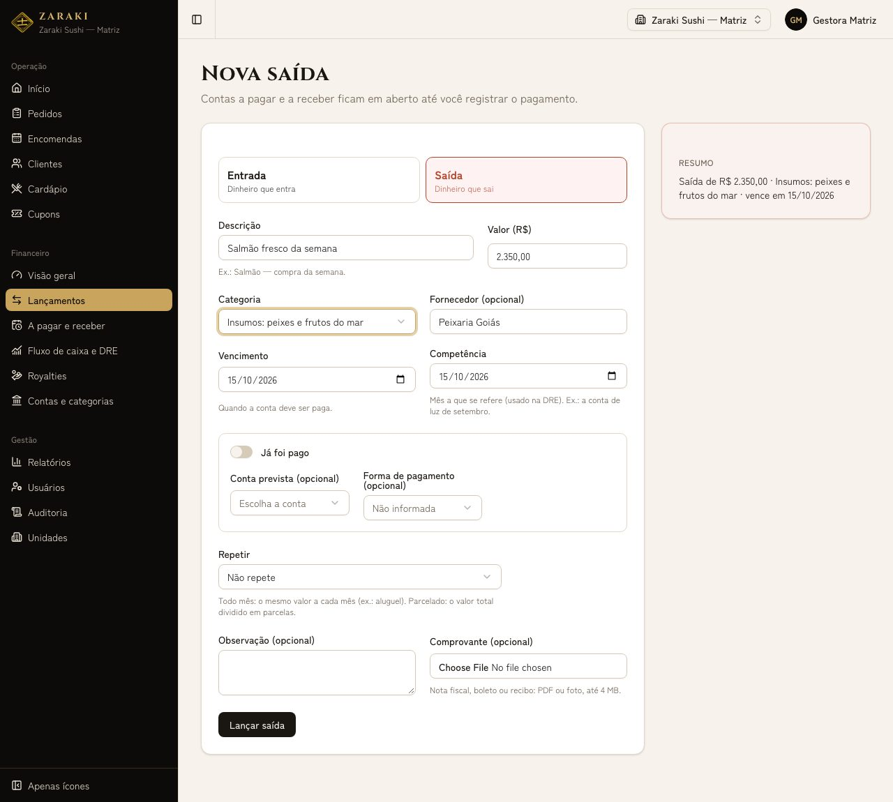
Nova saída: categoria, fornecedor, vencimento, competência, pagamento, repetição e comprovante.
Vencimento × competência: o vencimento diz quando pagar; a competência diz a que mês a conta se refere (a conta de luz de setembro, paga em outubro, é despesa de setembro na DRE).
Repetir: "todo mês por N meses" (ex.: aluguel) ou "parcelado em N vezes" (ex.: um freezer). Ao editar uma conta de uma série, dá para mudar só ela ou ela e as próximas em aberto.
Comprovante: foto ou PDF da nota, boleto ou recibo. Os arquivos são privados: ficam no banco da unidade, só abrem para quem tem acesso ao financeiro e entram no backup.
A pagar e receber
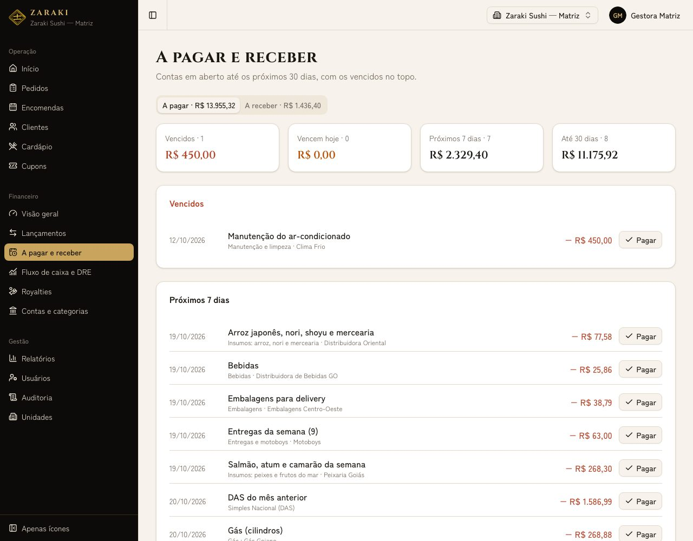
Agenda de vencimentos.
Mostra as contas em aberto até 30 dias, separadas em Vencidos, Vencem hoje, Próximos 7 dias e Até 30 dias, com o botão Pagar/Receber em cada uma. Em "A receber" aparecem também os pedidos entregues sem pagamento registrado.
Fluxo de caixa e DRE
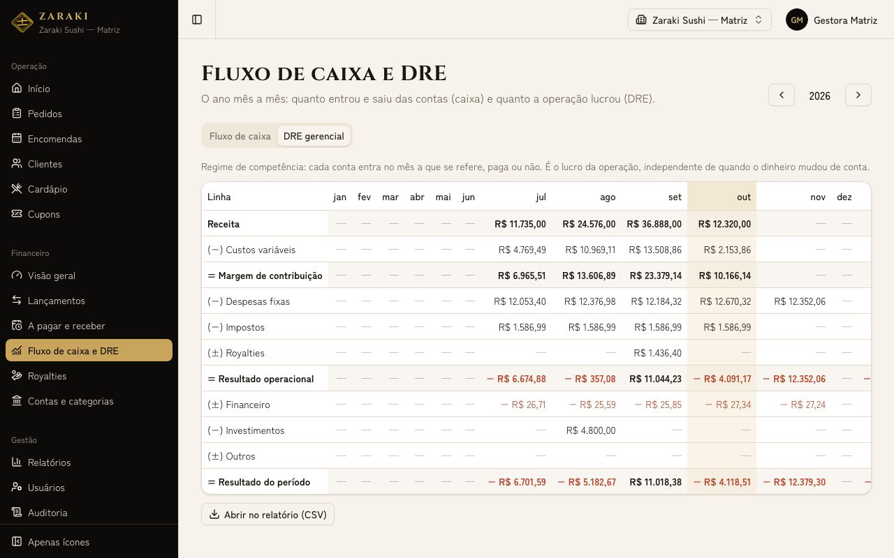
DRE gerencial do ano, mês a mês.
Fluxo de caixa: saldo inicial, o que entrou e saiu das contas e o saldo final de cada mês do ano. Do mês atual em diante, soma também o que está a pagar e a receber.
DRE gerencial: Receita − Custos variáveis = Margem de contribuição − Despesas fixas − Impostos ± Royalties = Resultado operacional; depois Financeiro, Investimentos e Outros, até o Resultado do período.
Royalties
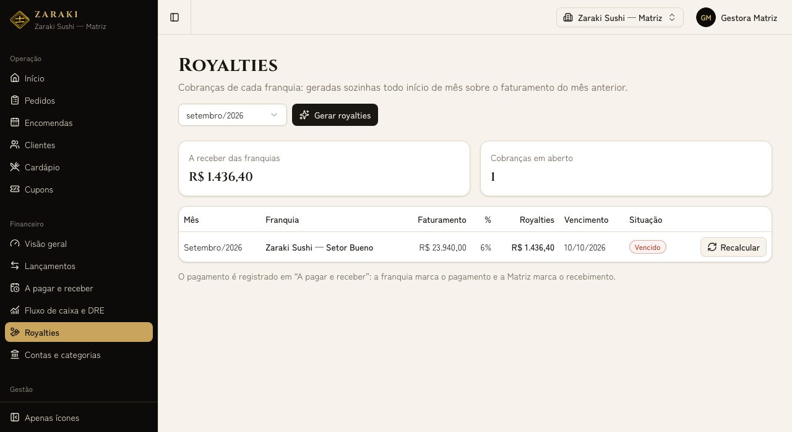
Royalties na visão da Matriz.
Todo dia, às 6h, o sistema gera a cobrança do mês anterior de cada franquia que tem percentual cadastrado: percentual × faturamento entregue no mês, com vencimento no dia definido no cadastro da unidade. Cada cobrança vira uma saída na franquia ("Royalties à Matriz") e uma entrada a receber na Matriz. Detalhes no capítulo 14.
Contas, categorias, fechamento e extratos
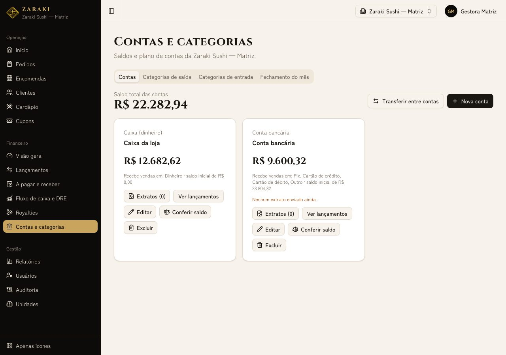
Contas da unidade com saldo, último extrato e ações.
Contas: onde o dinheiro fica (Caixa da loja, Conta bancária...), com saldo inicial e quais formas de pagamento cada conta recebe.
Transferir entre contas: por exemplo, depositar o dinheiro do caixa no banco. Não conta como entrada nem saída da empresa.
Conferir saldo: você informa o saldo real (extrato ou dinheiro contado) e o sistema lança a diferença como ajuste.
Categorias: plano de contas pensado para restaurante japonês (insumos de peixe, arroz e nori, embalagens, aluguel, folha, impostos...). As categorias de compra de mercadoria são marcadas como CMV.
Fechamento do mês: depois de fechado, nada daquele mês muda, nem por edição de pedido. Contas de competência fechada podem ser pagas em mês aberto. Reabrir fica registrado na auditoria.
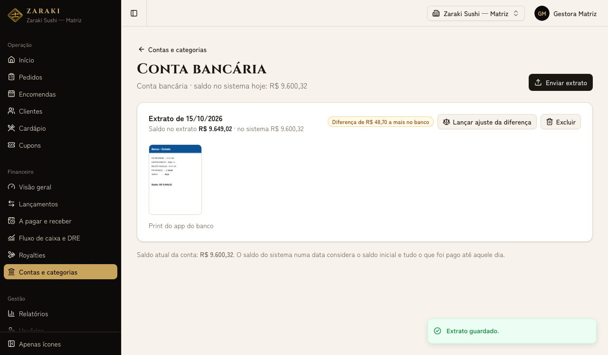
Extratos da conta: imagem do extrato, saldo informado e comparação com o sistema.
Extratos bancários: em cada conta, o botão "Extratos" abre o histórico fotográfico da conta. Envie fotos ou PDF do extrato com a data e o saldo mostrado. O sistema compara com o saldo calculado naquela data: Confere ou Diferença de R$ X. Se houver diferença, depois de procurar o que faltou lançar, o administrador pode lançar o ajuste na data do extrato.
Capítulo 11
Relatórios
São 32 relatórios, todos com filtro de período, gráfico, tabela e exportação em CSV (que abre no Excel). Cada exportação fica registrada na auditoria.
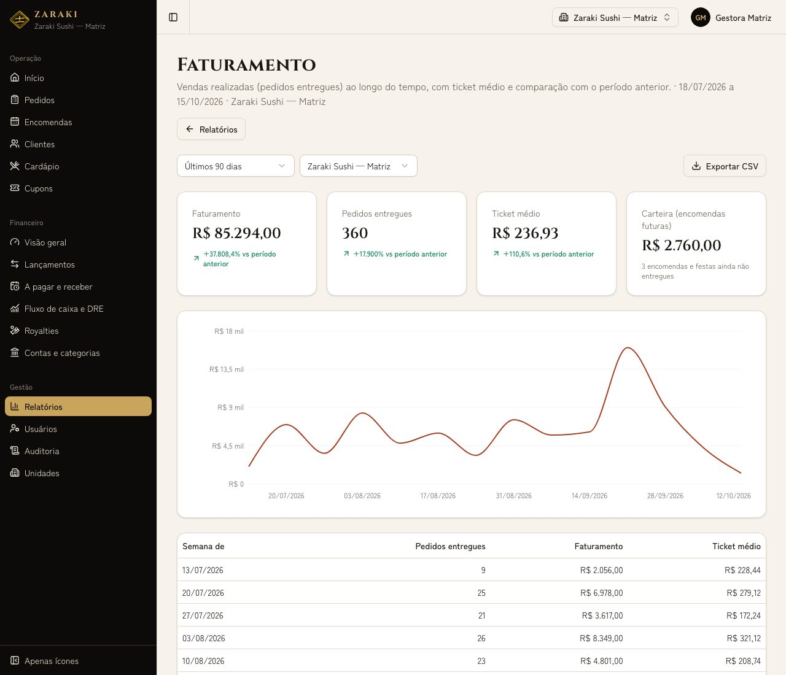
Exemplo: relatório de faturamento, com comparação ao período anterior.
Grupo
Relatórios
Vendas
Faturamento · Vendas por tipo · Vendas por origem · Dias e horários de pico (mapa de calor) · Sazonalidade e comparativo anual · Cupons de desconto
Cardápio
Ranking de sabores e curva ABC · Margem e CMV por sabor · Mix de sabores por tipo de pedido · Histórico de preços e custos
Clientes
Clientes novos × recorrentes · Recompra e frequência · Segmentação RFM (campanhas) · Melhores clientes (LTV) · Aniversariantes do mês · Vendas por bairro
Operação
Funil e tempo por etapa · Cancelamentos · Pedidos do site não confirmados · Previsão de produção (tubos por dia nas encomendas) · Festas
Financeiro
DRE gerencial · Fluxo de caixa · Despesas por categoria · Gastos por fornecedor · Contas a pagar e a receber por atraso
Franquia (Matriz)
Ranking de unidades · Royalties estimados · Comparativo entre unidades · Financeiro da rede
Governança
Atividade por usuário · Exclusões e restaurações
Faturamento realizado = pedidos entregues, pela data do pedido (ou da encomenda/festa).
Capítulo 12
Usuários e unidades
Usuários
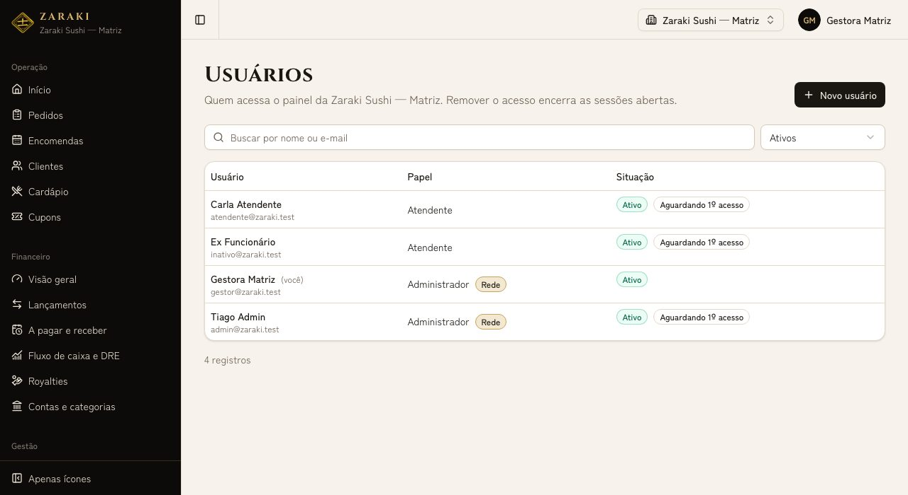
Equipe com acesso à unidade.
Criar usuário com nome, e-mail e papel na unidade. Uma senha provisória é gerada e mostrada uma única vez.
Redefinir senha gera nova senha provisória e encerra as sessões abertas.
Remover acesso encerra as sessões na hora. O histórico do que a pessoa fez continua na auditoria.
A pessoa não consegue alterar o próprio papel nem remover o próprio acesso.
Unidades
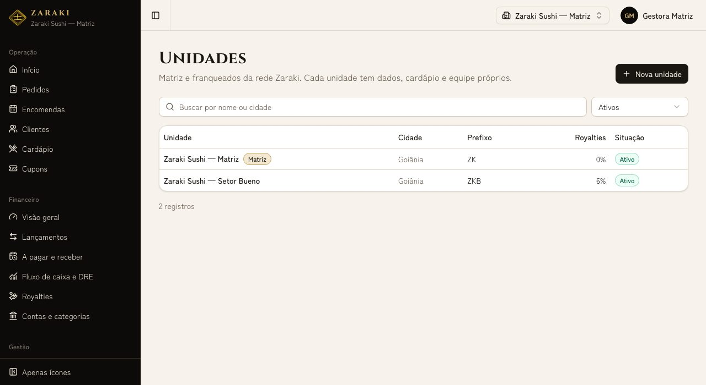
Matriz e franquias da rede.
Nova unidade: a franquia nasce com uma cópia do cardápio atual da Matriz (que depois pode ser ajustada) e com o financeiro pronto (contas e categorias).
No cadastro: nome, identificador, CNPJ, cidade, WhatsApp que recebe os pedidos, Google Agenda, domínio próprio (futuro), percentual de royalties, dia de vencimento dos royalties e prefixo dos pedidos (ex.: ZKB-000001).
Desativar uma unidade tira-a do seletor; todos os dados continuam guardados. A Matriz não pode ser desativada.
Capítulo 13
Auditoria
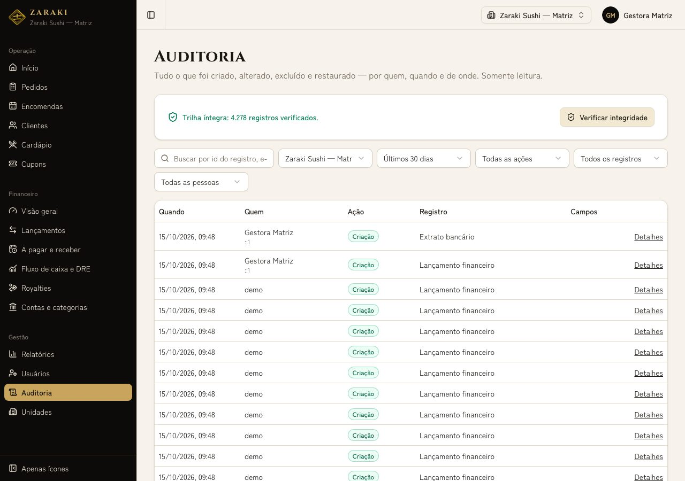
Auditoria com verificação de integridade.
Registro somente leitura de tudo o que foi criado, alterado, excluído e restaurado, e de logins, acessos negados, exportações e falhas, com quem fez, quando e de onde.
Filtros por período, tipo de ação, tipo de registro e pessoa. Cada linha abre o detalhe campo a campo: como era e como ficou.
As fichas (pedido, cliente, sabor, cupom, lançamento, usuário, unidade) têm a aba Histórico com a auditoria daquele registro.
Verificar integridade: confere a corrente de registros. Se alguém alterasse ou apagasse um registro diretamente no banco, a verificação acusaria.
Senhas e chaves nunca são gravadas na auditoria. Os arquivos (comprovantes e extratos) também não: a auditoria registra só quais arquivos foram ligados a cada registro.
Capítulo 14 · Para a Matriz
Como a Matriz acompanha as unidades
A Matriz tem duas formas de olhar a rede. Ela pode entrar em uma unidade e ver exatamente o que o franqueado vê. Ou pode olhar todas juntas, lado a lado ou somadas. Tudo isso é feito com o acesso de administração da rede.
1. Entrar numa unidade (o "olhar do franqueado")
No seletor de unidade, no topo do painel, escolha a franquia. A partir daí, todas as telas mostram os dados daquela unidade: pedidos do dia, encomendas, clientes, cardápio, cupons, lançamentos, contas, extratos, DRE e relatórios. É a forma de fazer uma visita virtual à unidade, sem pedir nada ao franqueado. Para voltar, escolha a Matriz no seletor.
Tudo registrado
O que a Matriz alterar dentro de uma franquia fica na auditoria daquela franquia, com o nome de quem alterou. A rede inteira tem o mesmo nível de rastreabilidade.
2. Ver a rede inteira
Onde
O que a Matriz vê
Início → "Ver toda a rede"
Faturamento, pedidos entregues, ticket médio e clientes novos somados de todas as unidades, com os gráficos do mês.
Relatórios → "Todas as unidades"
Qualquer relatório (vendas, cardápio, clientes, operação, financeiro) pode ser rodado para a rede toda, consolidando os números. Ex.: DRE da rede, previsão de produção de todas as unidades.
Ranking de unidades
Faturamento, pedidos, ticket e clientes de cada unidade, com o crescimento sobre o período anterior.
Comparativo entre unidades
Participação de delivery, encomendas e festas em cada unidade, ticket médio e sabor mais vendido.
Financeiro da rede
Receita, resultado operacional, margem, CMV, saldo em caixa e contas vencidas de cada unidade, lado a lado.
Royalties estimados
O percentual de cada franquia aplicado ao faturamento de qualquer período, útil para projeções.
Atividade por usuário e Exclusões e restaurações
Quem fez o quê em cada unidade, e tudo o que foi excluído e restaurado. Ajuda a perceber uso anormal.
Auditoria
Entrando na unidade pelo seletor, a Matriz consulta a auditoria daquela unidade. O escopo "Rede: logins e acessos" mostra os acessos de toda a rede, e "Verificar integridade" confere a trilha.
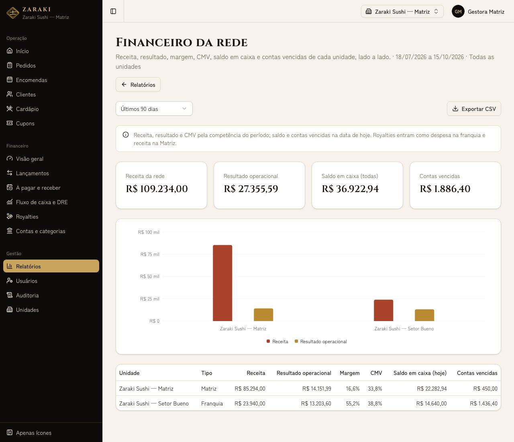
Financeiro da rede: cada unidade lado a lado.
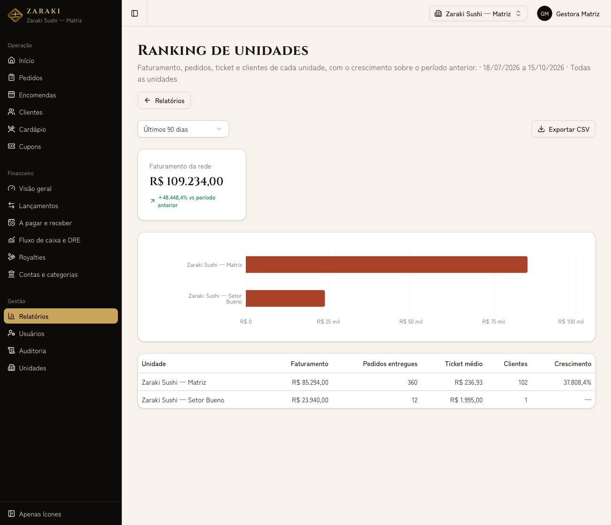
Ranking de unidades, com crescimento sobre o período anterior.
3. Royalties: do faturamento ao recebimento
1. Mês fechaA franquia vende; os pedidos entregues formam o faturamento do mês.
→
2. Cobrança geradaNo dia seguinte, às 6h, o sistema calcula percentual × faturamento. Também dá para gerar à mão.
→
3. Dois lançamentosSaída "Royalties à Matriz" na franquia; entrada a receber na Matriz, com o vencimento do cadastro.
→
4. PagamentoA franquia registra o pagamento; a Matriz registra o recebimento em "A pagar e receber".
A tela Royalties da Matriz mostra cada cobrança: faturamento, percentual, valor, vencimento e situação (Em aberto, Vencido, Franquia pagou: registrar o recebimento, Pago e recebido).
Recalcular, enquanto nada foi pago, refaz o valor com o faturamento atual (útil se pedidos do mês foram corrigidos depois).
A cobrança nunca é gerada em dobro. Se a geração falhar em alguma franquia (por exemplo, mês fechado), a falha fica registrada na auditoria e as demais seguem normalmente.
A franquia vê, na mesma tela, só o que ela deve à Matriz.
4. O que cada franqueado vê
Só os dados da própria unidade. Ele não vê outras franquias nem os números da Matriz, e o banco garante isso.
O seu cardápio, que nasceu da Matriz e pode ser ajustado, os seus cupons, a sua equipe e o seu financeiro.
As cobranças de royalties que deve, com valor e vencimento.
5. Rotina sugerida para a Matriz
Todo dia (5 minutos)
Início com "Ver toda a rede": vendas do dia e do mês.
Relatório "Pedidos do site não confirmados", com todas as unidades: clientes esperando resposta.
Encomendas e festas dos próximos dias, unidade por unidade.
Toda semana
Ranking de unidades (últimos 7 dias): quem cresceu e quem caiu.
Financeiro da rede: contas vencidas e saldo de cada unidade.
Cancelamentos e motivos, por unidade.
Previsão de produção: compra de peixe da rede.
Todo início de mês
Royalties: conferir as cobranças geradas e os pagamentos do mês anterior.
Financeiro da rede e DRE (todas as unidades) do mês fechado: margem e CMV de cada unidade.
Pedir a cada unidade o extrato bancário e o fechamento do mês.
Margem e CMV por sabor: ajustes de preço e de ficha.
Sempre que necessário
Entrar na unidade pelo seletor para entender um número fora do padrão.
Auditoria: o que mudou, quem mudou e quando.
Atividade por usuário e Exclusões: comportamento fora do comum.
Capítulo 15
Rotinas automáticas
Rotina
Quando
O que faz
Google Agenda
Logo após cada mudança; o que falhar é reenviado de hora em hora
Envia, atualiza e remove encomendas e festas na agenda; tenta de novo o que falhou.
Royalties
Todo dia, às 6h (Brasília)
Gera as cobranças do mês anterior das franquias, sem duplicar.
Vendas no caixa
Na hora
Pedido pago vira entrada no caixa; cancelado ou desmarcado é estornado.
Backup do banco
Toda noite
Cópia completa do banco, incluindo comprovantes e extratos, em armazenamento externo (Cloudflare R2).
Verificação de configuração
Ao iniciar o sistema
Lista no registro do servidor as configurações que faltam e impede a publicação com configuração inválida.
Saúde do sistema
Sob demanda
Endereço /api/health, para um monitor externo avisar se o site ou o banco caírem.
Capítulo 16
Situação atual e próximos passos
Todas as funcionalidades deste manual estão prontas e testadas: 52 testes automáticos simulam o uso real do site e do painel, e 198 testes conferem as regras de negócio e o banco de dados. O sistema roda hoje no ambiente local. Para colocá-lo no ar, faltam itens que dependem da Zaraki:
#
Item
O que é preciso
1
Guardar a versão atual
Autorizar o registro (commit) de todo o trabalho no repositório.
2
Hospedagem e banco
Contas na Vercel (plano Pro) e no Neon (Postgres). Passo a passo em docs/deploy.md.
3
Domínio
Endereço do site (ex.: zarakisushi.com.br).
4
Google Agenda
Conta de serviço com acesso à agenda zarakisushigo@gmail.com (docs/google-agenda.md).
5
Backup
Bucket no Cloudflare R2 e segredos no GitHub.
6
Dados reais
Custo de cada sabor; saldos iniciais reais das contas; percentual e vencimento dos royalties de cada franquia; primeiro administrador e usuários da equipe.
7
Opcional
Ajustar as faixas do semáforo financeiro (CMV, margem, reserva) à realidade da Zaraki.
Capítulo 17
Glossário
Termo
Significado
Exclusão lógica
"Excluir" deixa o registro inativo, sem apagá-lo. Pode ser restaurado.
Auditoria
Registro permanente de todas as mudanças: quem, quando, de onde e o quê.
Unidade
A Matriz ou uma franquia. Cada uma tem dados próprios.
Administração da rede
Acesso da Matriz que enxerga todas as unidades.
Faturamento realizado
Soma dos pedidos entregues no período.
Ticket médio
Faturamento ÷ número de pedidos.
Regime de caixa
Conta quando o dinheiro entra ou sai da conta (base do fluxo de caixa).
Competência
Mês a que a receita ou despesa se refere, independentemente de quando foi paga (base da DRE).
DRE
Demonstração do Resultado: mostra se a operação deu lucro ou prejuízo no período.
CMV
Custo da Mercadoria Vendida: quanto as compras de insumos representam das vendas.
Margem de contribuição
O que sobra das vendas depois dos custos variáveis, para pagar as despesas fixas.
Ponto de equilíbrio
Vendas necessárias para cobrir as despesas fixas (lucro zero).
Fôlego de caixa
Quantos meses de despesas o saldo atual consegue pagar.
Curva ABC
Classificação dos sabores: A = 80% do faturamento, B = os 15% seguintes, C = o restante.
RFM
Segmentação de clientes por Recência, Frequência e Valor, útil para campanhas.
Royalties
Percentual do faturamento que a franquia paga à Matriz.
Fechamento do mês
Trava que impede mudar os números de um mês já conferido.
Manual gerado a partir do próprio sistema. As telas mostram dados de demonstração. Para atualizar este documento, veja docs/manual/LEIA-ME.md.